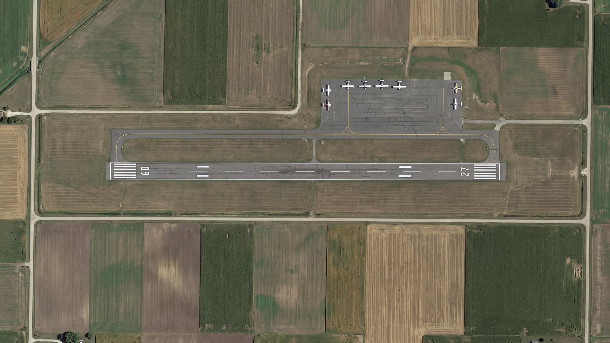

Your airport already has the data. It just isn't a map yet.
TDH International builds and maintains the GIS layers small and regional airports run on — Airport Layout Plans, obstruction surfaces, safety-area buffers, and the grant-compliance mapping behind them. Certified SB/DBE/ACDBE, and doing public-sector work for decades.
A GIS and compliance-mapping menu built for small and regional airports.
Six services, each with its own page. Start wherever your airport actually is — most sponsors begin with the ALP because everything else references it.
Airport Layout Plan (ALP) Digitization
Turn a paper or CAD ALP into a maintained GIS layer set, so the next update is an edit and not a redraw.
Read more →02Part 77 Surface & Obstruction Mapping
Model the imaginary surfaces, flag penetrations, and see what is quietly limiting who can serve your field.
Read more →03Airports GIS (AGIS) Survey & Submittal
Survey and mapping deliverables to AGIS specification, scheduled backwards from your commissioning date.
Read more →04Pavement, Apron & Hangar Inventory
One asset layer that answers lease questions, budget questions and grant questions at the same time.
Read more →05NPIAS / ACIP Grant Compliance Mapping
Tie capital improvement mapping to NPIAS eligibility and the grant-assurance reporting FAA expects.
Read more →06Safety Areas, RPZ & Wildlife Mapping
RSA, ROFA and RPZ boundaries mapped against parcel ownership and surrounding land use.
Read more →Which rules actually apply to your airport?
The honest answer differs between a Part 139 certificated field and a general-aviation one. Most vendors blur that. Answer two questions and see your own picture.
Answer both to see what applies.
Four things that tend to be split across three vendors.
Most airports are not short on consultants. They are short on one party who can see the map, the grant and the airspace at once.
The map and the paperwork come from the same team
GIS firms produce drawings. Grant consultants produce reporting. TDH has done both for years, so the layer supporting your ALP is the same layer supporting your grant-assurance reporting — no translation loss, no two-vendor blame gap.
Read by someone who has actually flown in
Our founder has over 40 years of aviation-related experience and the firm holds FAA pilot and drone certification. A layout plan gets reviewed as an operating environment, not just a drawing.
Certification that counts toward your goals
TDH is an SBA small business and certified ACDBE/DBE (#41593). Where your federally assisted work carries disadvantaged-business participation goals, our involvement contributes to them rather than competing against them.
We start from what you already have
Most small airports are not starting from zero — a 1990s paper ALP, a CAD file from a former engineer, institutional memory. That is a starting position, not a problem.
Public, private, academic and non-profit.
Six of these open a short before-and-after case study, without leaving this page. Figures come from published state and federal records.
Tell us your airport identifier. We'll tell you where you stand.
We look up what FAA has on file for your ALP, check it against your grant-assurance obligations and your entitlement window, and send back a one-page read. No charge, no meeting, no obligation.